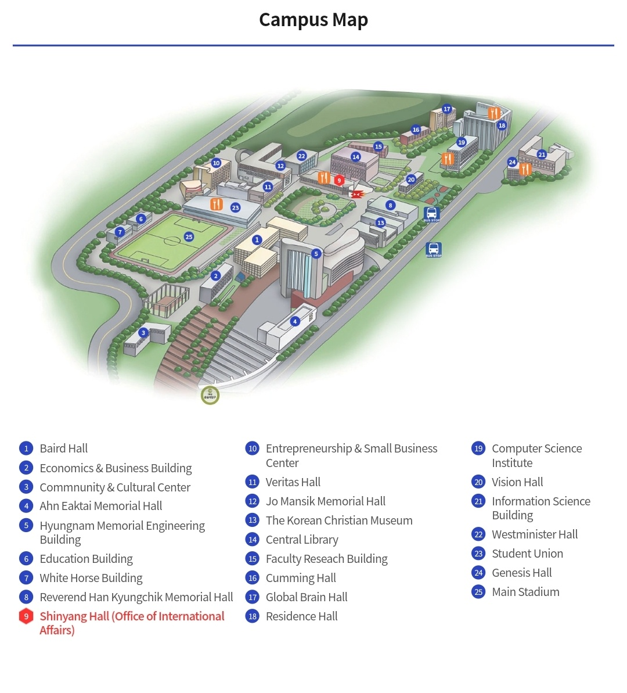

When you receive the U-saint ID (your student number) and password from your buddy later, you can log in.
After that, follow these steps:
Management of school affairs > 수강신청/교과과정 > Display personal course schedule
There is one restaurant called 'Student Dining' on the 3rd floor of the "Student Union" building. It's priced at 5000 won, and you can choose from three menu options.
Another restaurant, 'Dodam,' is located on the 2nd floor of "Shinnyang Hall". The price is 6000 won, and it mainly offers Korean dishes.
Please refer to the map for exact locations.
